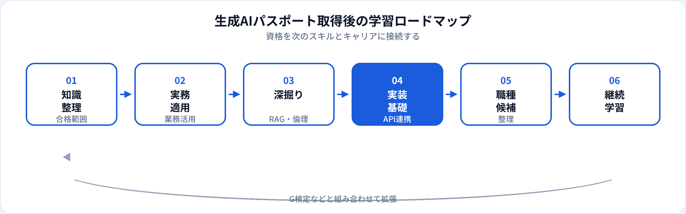

生成AIパスポートは、LLMの基礎・プロンプト・リスク管理・業務活用など、生成AIを安全に使うためのリテラシーを問う資格です。合格は学習の区切りと社内外での共通言語として有効ですが、それだけで専門職として完結するわけではありません。本記事では、取得後に伸ばすべきスキル、社内でのアピール、履歴書・転職での活かし方、G検定・実装学習へのつなげ方を2026年6月時点で整理します。
生成AIパスポートで証明できること
生成AIパスポートは、生成AIの仕組み・活用シーン・プロンプト設計・著作権・情報セキュリティ・ハルシネーション対策など、業務で生成AIを使ううえでの基礎判断力がある程度身についていることを示します。エンジニア以外の職種でも、社内のAI推進チームや各部門のリーダー候補として「リスクを理解した上で使える」土台として評価されることがあります。
一方で、試験は実装やコーディングを直接問うものではないため、RAGやエージェントを本番運用するスキルは別途学習が必要です。資格は「正しい地図を持っている」証明と捉え、実務・ポートフォリオとセットで見せるのが現実的です。
試験対策はこちら
生成AIパスポート 試験対策トップ · 一問一答 TF-0476（プロンプト） · TF-0234（RAG） · TF-0400（AIガバナンス）
取得後の学習ロードマップ（全体像）
合格直後にすべてを並行して学ぶより、①知識の整理 → ②業務適用 → ③深掘り → ④実装基礎（必要なら）→ ⑤職種整理 → ⑥継続学習の順で進めると挫折しにくいです。未経験からAI職へ必要な学習順序の「生成AI」フェーズと組み合わせて読むと、全体像がつかみやすくなります。
| フェーズ | 目的 | 期間の目安 |
|---|---|---|
| 知識の整理 | 合格範囲を自分の言葉で説明できる状態にする | 1〜2週間 |
| 業務適用 | 実際の業務タスクに生成AIを当てはめ、Before/Afterを記録 | 2〜4週間 |
| 深掘り | RAG・評価・ガバナンスなど弱点分野を補強 | 1〜2か月 |
| 実装基礎 | API連携・簡易PoC（エンジニア志向のみ） | 1〜3か月 |
| 職種整理 | 狙うポジションを1〜2に絞り、不足スキルを洗い出す | 随時 |
フェーズ別：伸ばすべきスキル
プロンプト設計と評価
指示の構造化、出力形式の指定、反復改善の記録。プロンプトエンジニアを目指すなら、なぜ品質が上がったかを説明できることが重要です。 ChatGPTなどで業務に近い題材を試します。
ChatGPTなどで業務に近い題材を試します。
リスク・ガバナンス
機密情報の入力禁止、著作権、ハルシネーション確認フロー。社内ガイドライン策定や研修資料づくりに直結します。
RAG・業務ナレッジ活用
社内文書を検索拡張する考え方は、ノーコードツールでも試せます。実装職ならベクトルDBとAPIの基礎へ。生成AIエンジニアの記事も参照。
データリテラシー（任意）
分析職を視野に入れるなら、SQLと可視化を並行。データアナリストは生成AIツールと相性がよい入口の一つです。
キャリア設計の流れ

合格後はいきなり大量の資格や講座に手を出すより、業務または個人プロジェクトで1つ成果を出すことを優先すると、社内評価も転職活動も進めやすくなります。生成AIパスポートはその中間の「リスクを理解した上で使える」マイルストーンとして位置づけます。
社内でのアピール方法
社内では資格そのものより、業務改善やルール整備への貢献が評価されやすいです。次のような形で見せると効果的です。
-
利用ガイドラインのたたき台
試験で学んだリスク項目を、自部門向けのチェックリストに落とし込む。情報システム部門への提案材料にもなる。
-
業務テンプレートの共有
議事録要約、メール下書き、調査のたたき台など、再現可能なプロンプト例を社内WikiやTeamsに掲載。
-
小さなPoCの数値
作業時間の短縮率、品質チェック工数の変化など、定量的なBefore/Afterを1件でもよいので記録する。
-
勉強会・ランチョンの開催
資格取得者として、ハルシネーションや著作権の注意点を同僚向けに15分で説明する機会を作る。
履歴書・転職活動での活かし方
資格欄の記載例
「生成AIパスポート 2026年6月取得」のように正式名称と年月を明記。取得見込みは年月を添え、虚偽記載は避ける。
職務要約への活かし方
「生成AIパスポート取得に伴い、顧客対応メールの下書きテンプレートを整備し、作成時間を約30%短縮」など、資格と成果を一文で結ぶと説得力が増す。
狙える職種の例
プロンプトエンジニア、AIプロダクトマネージャー、データアナリスト、生成AIエンジニア（実装スキルとセット）など。
職種選びに迷ったら、未経験者が最初に狙うべきAI職種5つも参照してください。
資格だけでは足りない点
| 生成AIパスポートの強み | 別途必要になりやすいもの |
|---|---|
| 生成AIのリスク・倫理の基礎理解 | 本番運用・監視の実務経験 |
| プロンプト設計の理論 | 評価指標に基づく改善サイクル |
| 社内外でのリテラシー証明 | GitHub・ポートフォリオ（実装職） |
| 業務活用の共通言語 | Python・API・クラウド（エンジニア職） |
G検定・実装学習へのつなげ方
目指すキャリアに応じた次の一手の例です。
-
エンジニア・データ職を目指す
G検定でML/DLの土台を固め、学習ロードマップに沿ってPython・SQLを進める。G検定のキャリア活かし方も参照。
-
プロンプト・PdM寄りを深める
業務課題ごとにプロンプトをバージョン管理し、評価観点（正確性・トーン・工数）を文書化。AI PMの記事で要件定義の考え方を補強。
-
生成AIの実装に進む
APIキーを使ったチャットボットや簡易RAGを1本作る。生成AIエンジニアのスキルセットをロードマップに。
よくある質問
生成AIパスポート取得後、最初に何を学ぶべき？
合格範囲を業務に当てはめ、プロンプトとリスク管理を実践で試すのがおすすめです。エンジニア志向なら続けてPythonとAPI連携の小さなPoCへ。
生成AIパスポートだけで転職できますか？
業務実績やポートフォリオと組み合わせれば入口としてアピールできます。実装職ではAIエンジニア向けの成果物が別途求められることが多いです。
社内のAI推進に資格は使える？
研修講師やガイドライン策定のリーダーとしてリテラシー証明に使われることがあります。成果物とセットで示すと評価されやすいです。
G検定と生成AIパスポートはどちらを次に取る？
生成AIパスポート取得済みでエンジニア・データ職ならG検定が次の一手になりやすいです。G検定のキャリア活かし方を参照してください。
取得からどのくらいで次の学習に進むべき？
合格直後1〜2週間で知識を整理し、すぐに業務または個人課題で1件試すのがおすすめです。間が空くと忘れやすいため、実践を早めると効率的です。